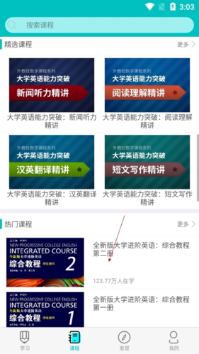

WE Learn 快问快答：随行课堂到底值不值得装？
整理一篇关于 WE Learn 的问答速查，从适用人群、课程获取、核心功能到评分机制，八个问点把随行课堂讲清楚，适合刚入学或刚接触的同学快速对齐。
整理一篇关于 WE Learn 的快问快答——刚开学被老师要求下载这个 APP 的同学不少，一圈问下来发现大家的疑惑高度重叠，干脆把该问的都替你问一遍。
WE Learn 是什么？给哪些人用？
WE Learn 的官网上写得很清楚，它是外教社推出的外语学习平台，覆盖英语专业、大学英语、高职、多语种、雅思托福、翻译等几乎所有主流外语场景。它不是那种靠 AI 陪练的自学工具，而是服务于教材配套课程 + 班级教学的平台——换句话说，你学校用的英语教材如果是外教社出的，大概率会配套用到它。
学生端用来做课程练习、交作业、查成绩；教师端用来布置任务、看学情统计、算平时分。两边数据打通，教师在后台能实时看到每个学生的进度和正确率。
怎么找到并加入自己需要的课程？
最稳的路径是直接用课程库分类浏览，不要依赖首页搜索栏——首页搜索定位是通用入口，搜课程反而不准。进课程库后按分类走：大学英语 → 找到对应教材系列（全新版大学英语、新目标大学英语之类）→ 按册次定位，基本不会错。

如果是教师布置的校内专用课程，让任课教师把课程的确切名称或课程 ID 发给你，拿着准确 ID 到课程库搜索——这类课不对外公开，自己搜是搜不到的。需要激活码的课程先确认教材在手且码未使用，激活一次就永久绑定。
跟其他英语学习 APP 比，它的核心差异在哪？
一句话：它以教材为中心，不是以词汇或刷题游戏为中心。
大部分主流英语学习 APP 走的是「背单词 + 听力 + 口语」的技能路线，内容平台自己编；WE Learn 的内容来自外教社的教材体系，课程结构严格跟着教材单元走，练习、作文、听力任务都是围绕当单元的课文和知识点设计的。这决定了它最适合有固定教材的课堂场景，而不是纯自学补基础。
另一个差异是班级绑定。你一个人装了没用——必须进教师创建的班级，才能拿到老师布置的作业、参与形成性评价、看到平时分。
作文智能批阅功能真的靠谱吗？
靠谱，但要搞清楚它是练习工具不是考试评分。
批阅引擎做四件事：即时打分、雷同检测、逐句点评、切题分析。提交后不用等，几秒钟就能看到分数；雷同检测会比对你写的内容和网上范文的相似度，背模板套范文会被识别出来，别存侥幸；逐句点评是最有价值的部分——哪句时态错了、哪句主谓不一致、连接词用得生硬，逐句标出来；切题分析检查你有没有跑题，语言没问题但跑题的作文分数照样上不去。
推荐的自练节奏：按题限时写完初稿 → 提交看逐句点评里反复出现的问题类型 → 按点评改写后再交一次，对比两次分数和点评变化。关于批阅引擎的详细参数和评分维度，we learn文档里有更完整的说明。
形成性评价到底怎么算？对期末成绩影响多大？
先给结论：它的权重由任课教师说了算，别拿别班的口径套自己的课。
平台的形成性评价由五项指标加权得出：学习时长、学习进度、单元客观题正确率、班级任务完成情况、还有一些过程数据（努力值、互动之类）。关键是，每项的权重和得分标准教师都可以自定义。有的老师把班级任务调到 60%，有的更看重时长和进度；同一门课换个老师，评分构成可能完全不同。
所以开学第一周就该让老师把各项占比说清楚，然后按占比分配学习时间——比如任务权重大就优先盯作业截止日期，时长权重大就每天留固定时间在 APP 里听音频和做练习。学期中用学习报告自查各项指标，考前突击补不动时长和进度这种过程数据。
搜索不到课程怎么办？
别慌，按顺序试四条替代路径：
- 换搜索入口：首页搜索栏搜不到是正常的，进课程库页面里的专属搜索栏再试。
- 按分类浏览代替搜索：进课程库 → 找教材所属系列 → 按册次定位，不依赖你记得全名。
- 星号变通：课程名或 ID 前加个
*再搜，对名称不完全匹配的场景有时能命中。 - 找教师要信息：校内专用课程不对外公开，只有教师能看到确切名称和 ID。
对学生来说最容易踩的坑有哪些？
三个高频坑：
坑一：分不清平台功能和考试标准。智能批阅的分数是练习反馈，期末考试作文评分以任课教师和考试大纲为准，不是批阅引擎。
坑二：期末才补时长和进度。形成性评价里的时长和进度是过程数据，靠日常积累，考前一周疯狂刷也救不回来——这两项不像选择题正确率可以短期突击。
坑三：作业交在自由练习里。教师布置的作业在「班级任务」标签下，自由练习区提交的作文不计入平时分，别交错地方。
长期用值不值？
如果你学校真的用 WE Learn 算平时分、教师真的在认真布置任务和看学情——值。它的作文批阅和学习报告两个功能，即使从纯自学角度看也比大部分免费工具做得细。但如果你学校只是象征性地装一下、教师根本不管班级任务——那它就是个装完就吃灰的东西，别投入太多精力。
这份随行课堂的中文资料整理了小半年，考虑到有时 GitHub 访问不太顺畅，文档分别放在了GitHub、Gitee 和 GitCode 三个仓库，随意取用。